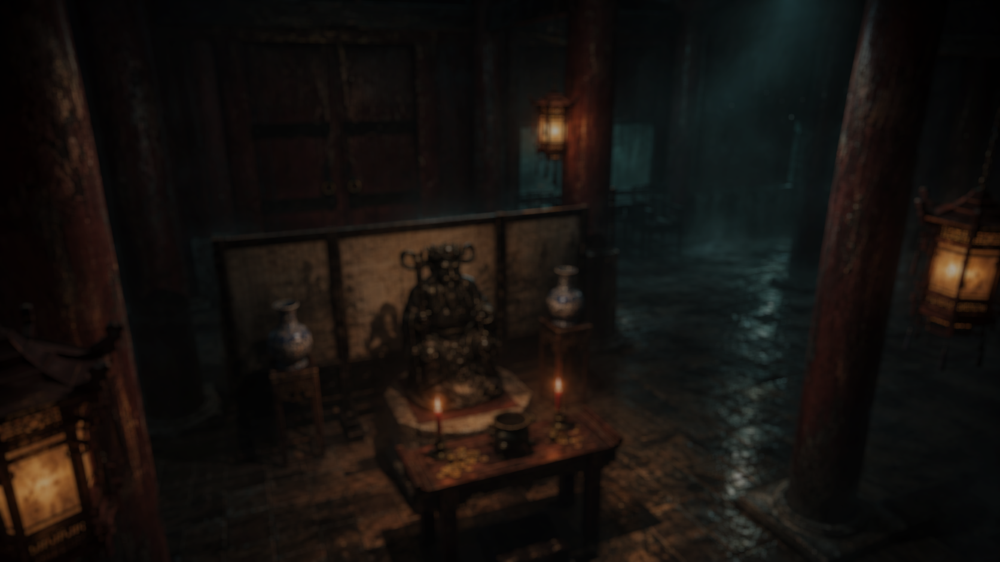
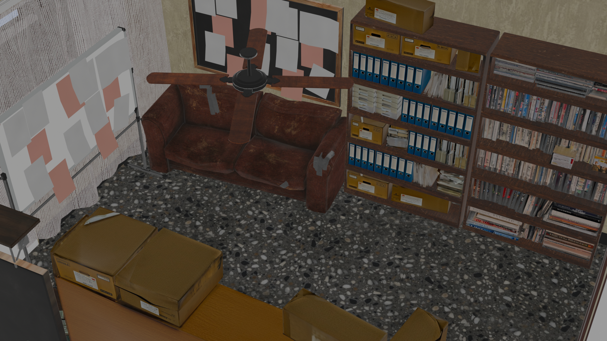
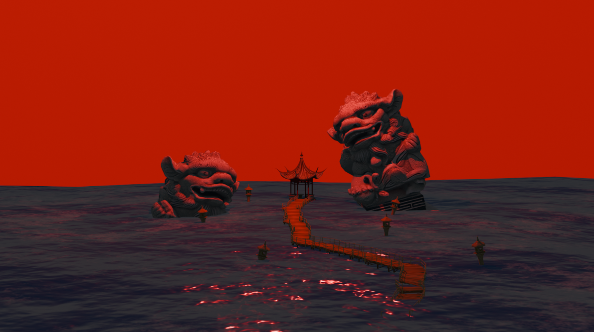
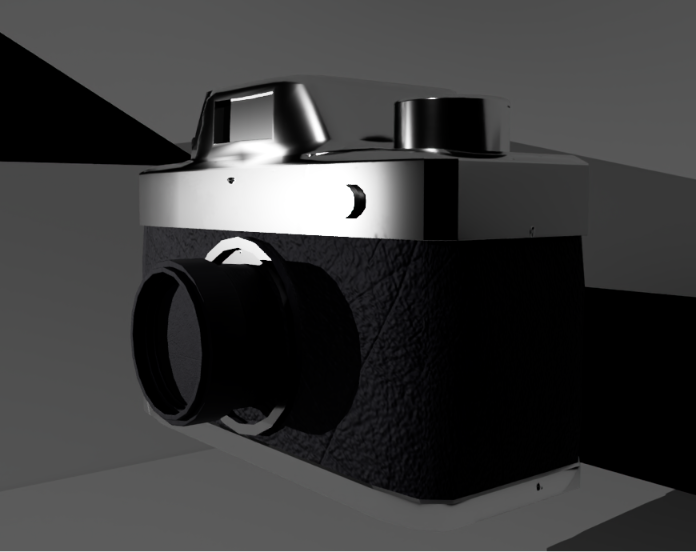
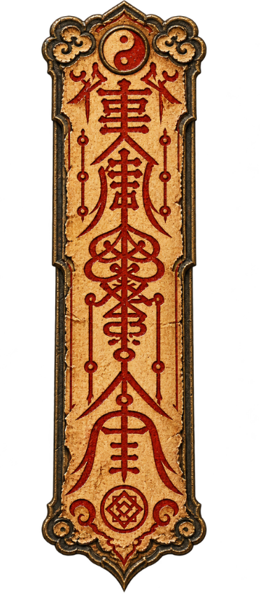
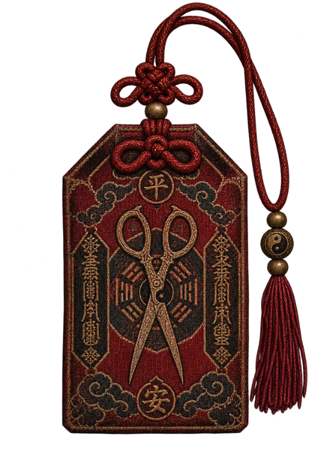
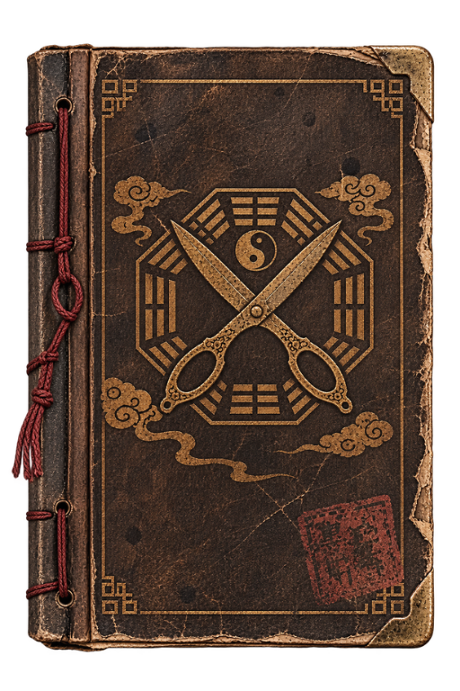

霧
被黑煙籠罩的城鎮
故事發生於高雄林園一帶。工業發展與污染陰影籠罩著城鎮，居民之間流傳著難以解釋的怪談；而這些傳聞，似乎都指向同一處被刻意遺忘的地方。
THE LAND REMEMBERS
在看似平靜的城鎮之下，古老的封印、被遺忘的坑道，以及無法解釋的異象，正逐漸交織成一場新的災難。
故事發生於高雄林園一帶。工業發展與污染陰影籠罩著城鎮，居民之間流傳著難以解釋的怪談；而這些傳聞，似乎都指向同一處被刻意遺忘的地方。
傳說先人曾以風水鎮物與符法封住地底煞氣。封印原本是為了阻止災厄外洩，然而當有人擅自挖掘、改動鎮煞陣，原本被壓制的力量便開始產生異變。
老廟下方連接著一處廢棄地下坑道。過去的挖掘行動留下了無法解釋的紀錄，也讓封印與地底遺跡產生牽連。如今，坑道成為追查失蹤事件的重要入口。
以下內容涉及遊戲序章與第一章劇情，包含部分解謎及劇情揭露。
未經確認的傳聞，請勿視為事實。A MISSING PERSON CASE
同伴阿明失蹤三天後，顧晨在自己的套房中醒來。桌上的相機、公事包，以及一卷留下警告的錄音帶，將他一步步引向那座廢墟老廟。
顧晨從昏沉中睜開雙眼。阿明已經失蹤三天，而他最後前往的地方，正是那座傳聞不斷的老廟。顧晨在房間裡找到老舊拍立得相機，並從牆上外套的內袋取得黃銅鑰匙。
鑰匙打開公事包，裡面收著老廟手繪平面圖、陰陽感光底片，以及第一卷錄音帶。阿明在錄音中急促警告：「千萬不要相信你在廟裡看到的一切！」
「如果你真的找不到我，把它剪斷！絕對……絕對不能讓祂離開那座廟——」
錄音突然中斷，窗外狂雷閃過，房間瞬間停電。黑暗中，只剩老電視的雪花雜訊閃爍；門外傳來細微的金屬剪刀聲。顧晨走向房門，調查就此開始。
顧晨推開老廟沉重的木門，進入一片漆黑的正殿。他在崩塌的木櫃中找到手電筒，並點亮供桌上的蠟燭。神龕中的關帝聖君像傾斜擺放，殿後則立著一座斑駁的無字石碑。
透過陰陽感光底片拍攝，石碑上浮現出隱藏文字：「威武降魔，面向正東；心存正道，鎮煞無凶。」顧晨依照線索轉動神像，開啟神桌暗格，取得鐵箱鑰匙。
舊鐵箱中藏著陰陽八卦盤與第二卷錄音帶。將八卦盤嵌入壁龕並調整卦象後，石門開啟，露出被封存的古剪刀。
「廟裡的石化鎮煞陣被人動過了手腳！他們不是要鎮煞，是在養煞！」
阿明在第二卷錄音帶中揭露：神像下方有一條通往日軍地下坑道的通道。入口被黑色煞氣與紅繩纏繞，顧晨必須使用古剪刀，剪斷纏住鐵門的煞繩，才能打開通往地底的道路。
煞氣散去，鐵門轟然開啟。顧晨望向深不見底的階梯，低聲說道：「這下面居然有坑道……阿明，我來了。」
老廟地下的階梯通往日軍廢棄坑道。顧晨將沿著阿明留下的線索繼續追查，尋找失蹤真相，以及鎮煞陣遭到改動的原因。
後續劇情開發中未結案・調查中
《剪煞 The Snip》是一款以台灣民俗文化為背景的第一人稱 3D 解謎遊戲。玩家將深入被封印的廢廟與舊坑道，透過觀察環境線索、蒐集物件，並運用核心機制「剪煞」，破解層層機關與結界。
在昏暗的空間裡，每件物品都可能是線索，每一道封鎖也可能藏著尚未揭露的秘密。

探索場景、觀察細節、收集物件，並在環境中尋找解開謎題的方法。玩家需要留意每一處線索，逐步推進調查。
目前展示序章與第一幕內容，第二幕持續開發中。

01從主角的調查空間出發，熟悉操作方式，開始整理事件線索。
已完成內容展示 02
02進入老廟場景，透過探索與神像互動，尋找推進調查的線索。
主要內容製作中／持續完善
03延續調查與解謎流程，場景及物件互動內容持續製作。
開發中EVIDENCE & OBJECTS
調查過程中蒐集的物件，
將成為理解事件的重要線索。

證物照片 / 001一部老舊的照相機，作為調查過程中的紀錄工具。
透過實際遊玩畫面，了解目前的操作與場景呈現。
延伸遊戲中的民俗與調查意象，
製作具有《剪煞》識別的形象周邊。



THE CASE IS NOT CLOSED